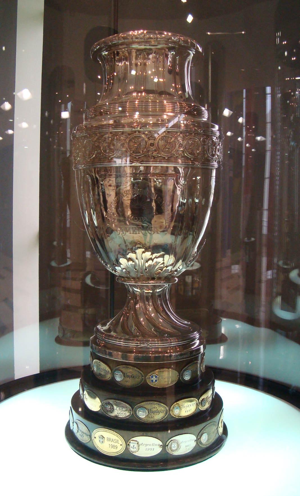

HISTORIA DE LA COPA AMERICA

Para la celebración del centenario de su independencia, Argentina celebró un torneo entre el 2 y el 17 de julio de 1916, al que asistieron los invitados a la copa de 1910 junto con Brasil, consagrándose Uruguay como campeón del torneo. Este "Campeonato Sudamericano de Selecciones" fue la primera edición de lo que actualmente se conoce como Copa América. Luego de que Uruguay saliese campeón, uno de sus dirigentes, Héctor Rivadavia Gómez, al ver el éxito del torneo, propuso la fundación de una confederación que agrupara a las federaciones de los cuatro países presentes. El 9 de julio de 1916, dirigentes de Argentina, Brasil, Chile y Uruguay se reunieron en Buenos Aires para estudiar la idea integradora de Héctor Rivadavia Gómez, la cual fue aprobada ad-referéndum de las respectivas asociaciones nacionales. Finalmente, el 15 de diciembre de ese mismo año, en Montevideo, se celebró el Congreso Constitucional, en el que se ratificó todo lo actuado, dando nacimiento a la Confederación Sudamericana de Fútbol (Conmebol o CSF). Ya fundada la Conmebol, al año siguiente se organizó nuevamente el Campeonato Sudamericano, esta vez en Uruguay. Para ello, la confederación compró un trofeo para entregar al campeón: una copa de plata con base de madera, adquirida en una joyería de origen francés en Buenos Aires con un costo de 3000 francos suizos de la época. El selecto grupo de cuatro participantes se abrió en 1921, cuando fue admitida la selección del Paraguay, evento en el que Argentina alcanzó su primer título. En los años posteriores, Uruguay fue dominador del evento aprovechando el equipo que los consagró como campeones olímpicos, que a esa fecha era el mayor torneo de balompié a nivel mundial. Argentina, sin embargo, no se quedó atrás y disputó la supremacía ante los charrúas, al ganar los Campeonatos Sudamericanos de 1925 y de 1927. Las ediciones de 1923 y 1924 se realizaron en Uruguay, siendo la primera vez en la historia que un mismo país organizó el torneo de manera consecutiva. La edición de 1923 sirvió para clasificar a los Juegos Olímpicos de París 1924 —solo clasificó el campeón, que resultó ser Uruguay y que también fue el campeón olímpico—. Fue la primera vez que el torneo sirvió para clasificar a los Juegos Olímpicos. En 1925, por diferentes razones, solo participaron tres selecciones, Argentina, Brasil y Paraguay, resultando la edición con menos participantes en la historia del torneo. Lo curioso fue que a pesar de aplicarse el sistema de todos contra todos, las tres selecciones que jugaron dicha edición tuvieron que enfrentarse dos veces entre sí. En la edición 1926, el seleccionado de Bolivia hizo su debut en el torneo. Y en la edición 1927, el seleccionado de Perú hizo su debut en el torneo, curiosamente como anfitrión de este. La edición 1927 sirvió para clasificar por segunda vez a los Juegos Olímpicos de Ámsterdam 1928 —solo clasificaron el campeón (que resultó ser Argentina) y el subcampeón (que resultó ser Uruguay)—. Coincidentemente, ambos equipos se enfrentaron en la final de los Juegos Olímpicos, y al final Uruguay se consagró bicampeón olímpico.
El 9 de abril de 2019, en el 70.° congreso ordinario de la Conmebol que se llevó a cabo en Río de Janeiro, Brasil, se dio a conocer que Argentina y Colombia serían las sedes de la Copa América 2020. La primera edición con sedes compartidas se realizaría un año después de la Copa América de Brasil 2019.26 Sin embargo, debido a la pandemia por COVID-19, se decidió postergar la edición para 2021, coincidiendo con la Eurocopa que también se disputaría ese mismo año. Finalmente, el 20 de mayo de 2021 la Conmebol retiró a Colombia como sede de la Copa América 2021 debido a la falta de garantías para su realización en el marco de las protestas en Colombia, y el 31 de mayo de 2021 Argentina también fue retirada como sede a petición del propio gobierno argentino debido a la situación del COVID-19 en el país; la Conmebol otorgó la sede a Brasil a solo diez días de jugarse el torneo.272829 Con la edición de Copa América 2021, la Conmebol unificará calendarios con las demás confederaciones, principalmente con la UEFA; desde 2021 la Copa América se realizará cada 4 años, siempre pares. La siguiente edición será en 2024, con sede en Estados Unidos.